PORTFOLIO 03
ASICS KOREA · 비공식 개인 리디자인
달리는 방식으로.
아식스 코리아
남성 러닝화
구매 경험 리디자인
유형 → 목록 → 비교 → 상세 → 담기
러닝화 유형 5종을
탐색의 첫 단계로.
비공식 개인 리디자인
아식스와 무관한 개인 포트폴리오입니다.
제품 이미지는 AI 생성 컨셉 비주얼이며
실제 아식스 제품 이미지가 아닙니다.
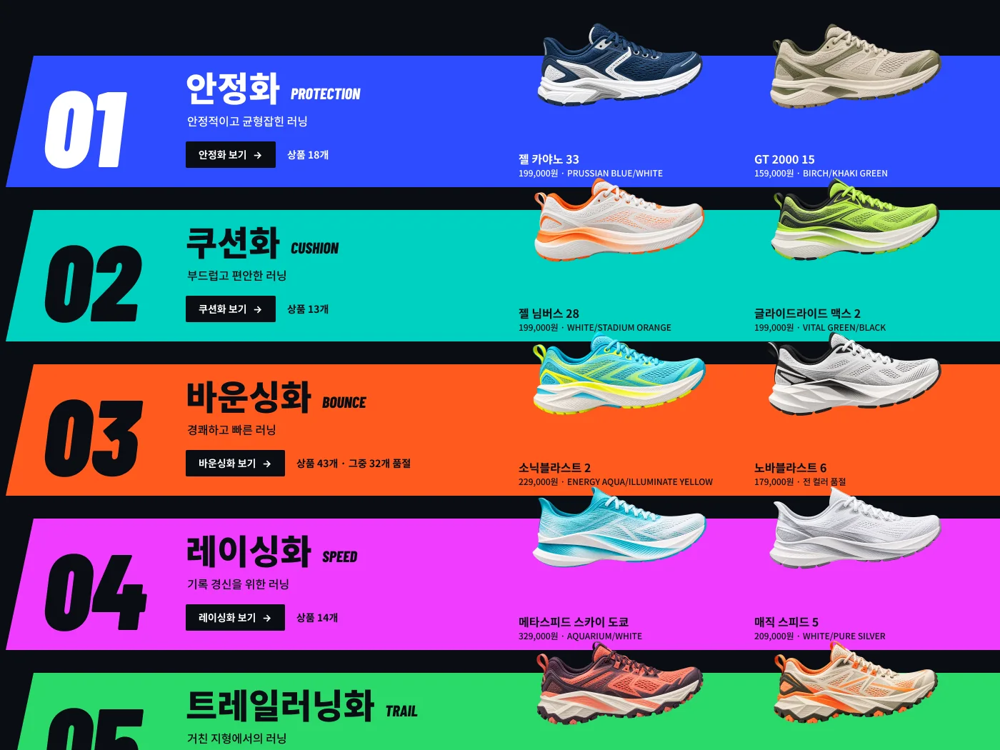
02Overview
남성 러닝화 구매 흐름을
여섯 화면으로 다시 설계했습니다.
아식스 코리아 공식 온라인스토어의 남성 러닝화 탐색 · 비교 · 구매 흐름이 대상입니다.
03Local Context
번역하지 않고,
근거를 다시 세웠습니다.
처음 시안은 미국 사이트 데이터로 세운 가설이었습니다.
한국 공식 사이트를 조사한 뒤 분류와 판매 정보를 한국 기준으로 바꿨습니다.
초기 가설 Global Concept · US data
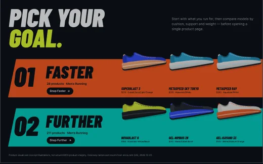
| 항목 | 가설 · 미국 | 확인 · 한국 |
|---|---|---|
| 분류 | Goal 2종 Faster · Further |
러닝화 유형 5종안정화 · 쿠션화 · 바운싱화 · 레이싱화 · 트레일러닝화 |
| 가격 | 달러 | 원 |
| 사이즈 | US Size | mm |
| 상세 스펙 | Cushion · Drop · Support | 소재 · 미드솔 · 아웃솔 · 무게 |
| 대표 상품 | SUPERBLAST 3 | 젤 카야노 33슈퍼블라스트 3은 한국에서 전 사이즈 품절 |
나이키 코리아와 뉴발란스 코리아도 기능 · 목적 분류를 러닝화 탐색의 진입로로 씁니다(2026-10-01 확인). 미국 시안은 보관본으로 남겼습니다.
04Problem
분류는 있는데,
목록과 끊겨 있습니다.
아식스 코리아 공식 온라인스토어의 남성 러닝화 목록에서 확인한 세 가지 사실입니다.
-
01Filter
필터 7개 중 러닝화 유형 0개
유형 5종은 #RUN의 SHOE FINDER에만 있고
남성 러닝화 목록 필터에는 없습니다. -
02Fragmentation
젤 카야노 33 하나가 카드 14장
컬러 6 · 2E 4 · 4E 3 · 플래티넘 1.
같은 모델이 목록 곳곳에 흩어집니다. -
03Sold Out
바운싱화 43개 중 32개 품절
품절 카드가 판매 중 카드와
같은 목록에 섞여 나옵니다.
지금의 탐색 구조
기능으로 찾기
#RUN · SHOE FINDER러닝화 유형 5종
유형별 카테고리남녀 상품이 섞여 있음
연결 없음
목록에서 찾기
Men › 신발 › 러닝화71개 · 필터 7개
컬러 · 발 너비별 카드같은 모델이 반복됨
상세컬러 1개 · 스펙 표 5필드
다른 컬러 = 다른 상세발 너비 = 별도 상품
출처: 아식스 코리아 공식 온라인스토어, 2026-10-01 조사(비로그인). 바운싱화 수는 유형 카테고리 기준이며 남녀 상품을 포함합니다.
05Strategy
유형부터 담기까지,
하나의 흐름으로.
같은 유형 이름과 색이 홈에서 장바구니까지 이어집니다. 아래는 안정화를 고른 경우입니다.
-
STEP 1
유형
레인에서 고른다
01안정화D1 레인
-
STEP 2
목록
유형 탭과 카드 태그
01안정화D2 탭 · 카드
-
STEP 3
비교
최대 3개를 나란히
01안정화D3 열 머리
-
STEP 4
상세
컬러 · 발 너비 · 사이즈
01안정화D4 스펙 밴드
-
STEP 5
담기
고른 그대로 담는다
장바구니 담기 · 270구매 버튼
-
Decision유형
유형에서 시작한다
Section 07
-
Decision목록 · 비교
모델은 하나로 묶고 비교한다
Section 08
-
Decision상세 · 담기
한 화면에서 고르고 담는다
Section 09
"러닝화 유형" 탭과 필터는 리디자인 제안입니다. 현재 아식스 코리아 목록 필터에는 없습니다.
06Design System
색은 유형을,
한글은 안내를 맡습니다.
시각 요소마다 맡은 일을 하나씩 정했습니다.
유형 색 5 Running Type Colors
01
안정화
02
쿠션화
03
바운싱화
04
레이싱화
05
트레일러닝화
유형 색은 유형의 의미로만 쓰고, 항상 한글 유형명과 함께 씁니다. 선택 상태와 주 CTA는 이 한 색(#E4FF2E)만 씁니다.
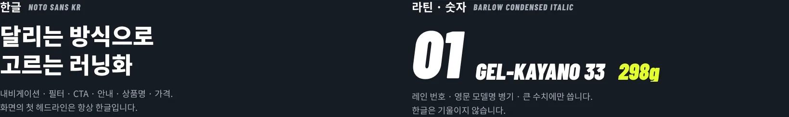
컨셉 제품 비주얼 Concept Product Visual
아식스 상품 · 캠페인 사진은
사용 권리를 확인하지 못해 쓰지 않았습니다.
실제 판매 컬러웨이를 참고해 AI로 제작한
비공식 컨셉 제품 비주얼을 사용했습니다.
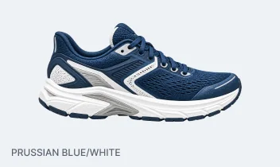
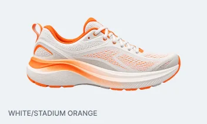
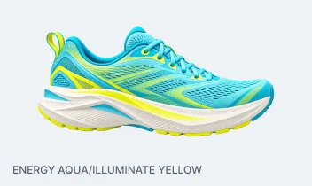
핵심 컴포넌트 Core Components
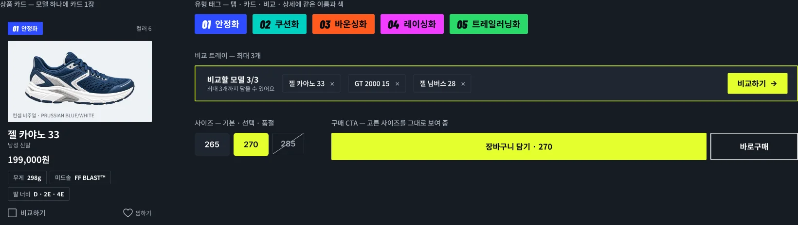
대비 값은 디자인 시스템 문서에 기록한 계산값입니다. 색 값은 제안 근사치이며 아식스 공식 색이 아닙니다.
07Decision 01
모델명이 아니라
달리는 방식에서 출발합니다.
아식스 코리아 SHOE FINDER의 유형 5종을 홈의 첫 선택지로 올렸습니다.
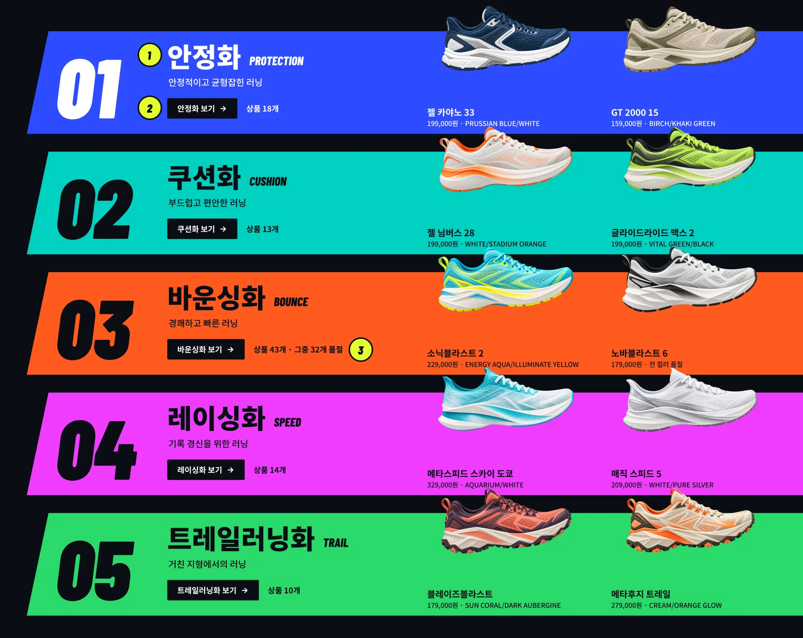
SHOE FINDER의 유형 5종을 홈으로
#RUN 안에만 있던 분류를
탐색의 첫 선택지로 올렸습니다.같은 이름이 목록까지
레인에서 고른 유형이 목록의 탭,
필터, 카드 태그로 이어집니다.상품 수와 품절을 먼저
바운싱화는 43개 중 32개가 품절임을
유형 단계에서 보여 줍니다.
목록으로 이어지는 유형 D2 · Type Tabs + Filter
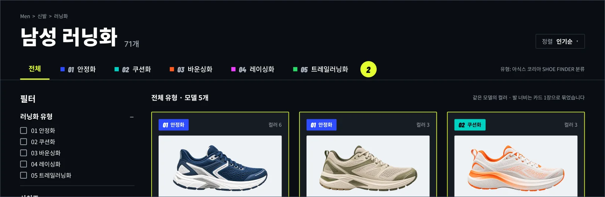
"러닝화 유형" 탭과 필터는 리디자인 제안입니다. 현재 아식스 코리아 목록 필터에는 유형이 없습니다. 상품 수는 유형 카테고리 기준(남녀 포함)입니다.
08Decision 02
흩어진 카드를 하나로 묶고,
차이는 나란히 봅니다.
모델 하나에 카드 한 장. 상세를 열기 전에 최대 3개를 비교합니다.
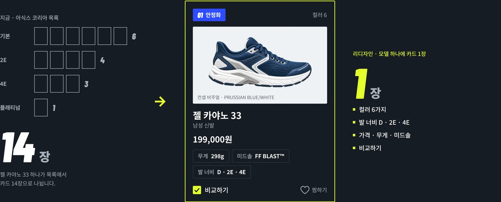
상세를 열기 전에, 최대 3개를 나란히 D2 Compare Tray → D3 Compare
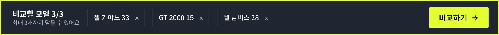
유형 색이 비교 열 머리로
홈에서 고른 유형의 이름과 색이
비교 화면까지 이어집니다.판단에 쓰는 값을 한 줄로
가격 · 무게 · 소재 · 발 너비 · 컬러 · 사이즈를
같은 행에서 비교합니다.
값은 아식스 코리아 각 상품 상세의 원문 그대로입니다. GT 2000 15의 미드솔 · 아웃솔 표기도 원문 그대로이며 서로 뒤바뀐 것으로 보입니다. 무게 강조는 추천이 아닙니다.
09Decision 03
고르는 과정과
담는 과정을 끊지 않았습니다.
컬러, 발 너비, 사이즈를 한 화면에서 정하고 그 선택이 구매 버튼에 그대로 남습니다.
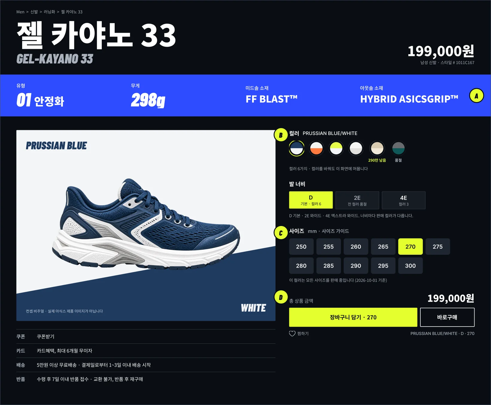
상품 · 스펙
유형, 무게, 소재를
상품명 바로 아래에 둡니다.컬러 · 발 너비
컬러 6가지와 D · 2E · 4E를
같은 화면에서 바꿉니다.사이즈
mm 단위로 고르고
선택과 품절을 구분합니다.구매
총 상품 금액과
"장바구니 담기 · 270".
품절도 고르는 자리에서 보여 줍니다 State Zoom
대표 상품은 젤 카야노 33입니다. 슈퍼블라스트 3은 한국 조사 당시 전 사이즈 품절이라 구매 흐름을 끝까지 보여 줄 수 없었습니다. 컬러 · 재고는 2026-10-01 기준입니다.
10Mobile
축소가 아니라,
우선순위를 다시 정했습니다.
데스크톱에서 정한 흐름을 390 폭에 맞게 다시 배치했습니다.
데스크톱에서 모바일로 Desktop → Mobile
유형 탭
가로 스크롤 유형 칩
좌측 필터 열
필터 버튼 하나
3열 카드
1열 카드
패널 안 구매 버튼
하단 고정 구매 바
390×844 프레임에서 측정했습니다. 실기기에서는 확인하지 않았습니다.
11Outcome
바꾼 것은
화면보다 구조였습니다.
성과를 수치로 말할 근거는 없습니다. 구조에서 달라진 점과 아직 검증하지 않은 점을 정리합니다.
Outcome01
유형 5종을
탐색의 첫 단계로 연결했습니다SHOE FINDER에만 있던 러닝화 유형을
홈, 목록, 비교, 상세에 이었습니다.Outcome02
모델 하나를
카드 한 장으로 통합했습니다컬러 · 발 너비 · 에디션별로 나뉘던 카드를
모델 단위로 묶었습니다.Outcome03
유형부터 담기까지
하나의 흐름으로 재구성했습니다유형 → 목록 → 비교 → 상세 → 담기.
같은 유형 이름과 색이 끝까지 이어집니다.
Mobile모바일에서는 같은 흐름의 우선순위를 다시 정했습니다. 첫 화면에 유형 · 상품명 · 가격, 하단 구매 바에 고른 내용.
제작 방식 AI Automation Process
리서치부터 최종 Export까지,
반복 작업을 하나의 자동화 파이프라인으로 연결했습니다.
2 DAYSResearch → Final Case Study실제 작업일 기준
01
RESEARCH
한국 시장과
상품 구조 조사02
STRUCTURE
Problem · IA
User Flow03
BUILD
Figma MCP 기반
화면 구현04
RENDER QA
Render → 검사
→ Targeted Fix05
CASE STUDY
결정과 결과를
포트폴리오 구조로 정리06
EXPORT
Final Master
→ PDF QA
HUMAN직접 한 일
- 프로젝트 목표 설정
- AI 작업 지시 · 프롬프트 작성
- 결과 검토 · 수정 요청
- 제품 비주얼 생성 · 선정
- 최종 결과 승인
AI AUTOMATION자동화한 일
- 리서치 정리
- UX 구조 제안
- UI 디자인 · Figma 구현
- Render QA
- 상태 기록 · 문서화
- Case Study Production
돌아보며 Reflection
번역이 아니라 재조사
미국 시안을 옮기지 않았습니다. 한국 공식 사이트에서
유형 · 가격 · 사이즈 · 재고 · 상품 구조를 다시 조사해 근거를 바꿨습니다.화면보다 흐름을 먼저
시각 스타일을 정하기 전에
유형 → 목록 → 비교 → 상세 → 담기의 순서부터 정했습니다.반복 구현을 자동화하고, 판단에 시간을 썼습니다
화면 구현, Render QA, 상태 기록 같은 반복 작업은 AI Agent와 Figma MCP로 자동화하고,
프로젝트 목표 설정, 작업 지시, 결과 검토와 최종 선택은 직접 수행했습니다.데이터는 조사 시점 기준, 검증은 아직
상품과 재고 정보는 2026-10-01에 조사한 값입니다.
사용자 테스트, 실기기 테스트, 실서비스 적용, A/B 테스트는 하지 않았습니다.
한계 Limitations
- 비공식 개인 리디자인
- 비로그인 상태에서 조사
- 제품 이미지는 AI 생성 컨셉 비주얼
- 모바일은 390×844 프레임 기준
다음 검증 Next Validation
사용자 테스트로 확인할 세 가지입니다.
- 유형 분류를 이해하는가
- 비교 항목의 우선순위가 맞는가
- 모바일 구매 바가 쓰기 편한가
아식스 코리아 남성 러닝화 구매 경험 리디자인 · 비공식 개인 리디자인이며 아식스와 무관합니다.PORTFOLIO 03 · 2026